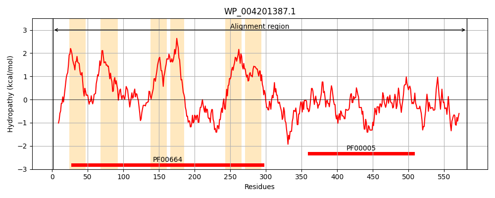
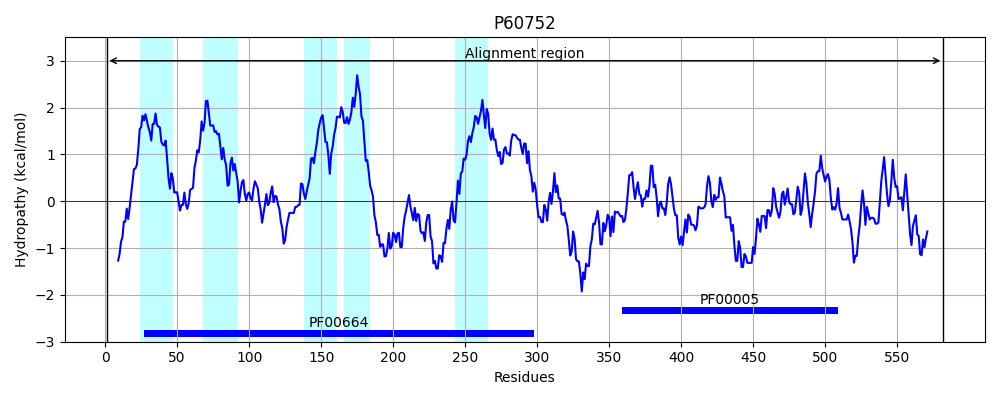
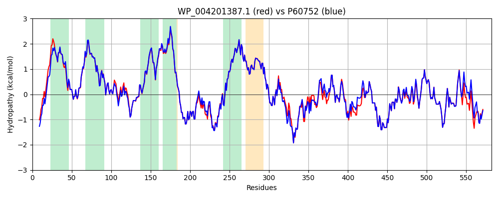

Hit Accession: P60752
Hit TCID: 3.A.1.106.1
Hit Description: gnl|BL_ORD_ID|11129 gnl|TC-DB|P60752|3.A.1.106.1 Lipid A export ATP-binding/permease protein msbA - Escherichia coli.
Mach Len: 582
e:0.000000
Query TMS Count : 6
Hit TMS Count: 5
TMS-Overlap Score: 5.800000
Predicted Substrates:CHEBI:8150;phospholipid, CHEBI:25051;lipid As, CHEBI:6494;lipopolysaccharide, CHEBI:23888;drug
BLAST Alignment:
Score: 2721 , Bit scores: 1052 bits, E-value: 0.0e+00, Alignment length: 582, Percentage identity: 93
Query: 1 MQNDKDLSTWQTFRRLWPIIAPFKAGLIVAAVALVLNAGSDTFMLSLLKPLLDDGFGKTDRSVLLWMPLVVIGLMVLRGITSYISSYCISWVSGKVVMTMRRRLFGHMMGMPVAFFDKQSTGTLLSRITYDSEQVASSSSSALITVVREGASIIGLFVMMFYYSWQLSLILIVLAPIVSVAIRVVSKRFRNISKNMQNTMGQVTTSAEQMLKGHKEVLMFGGQEVETKRFDKVSNKMRLQGMKMVSASSISDPIIQLIASLALAFVLYAASFPSVMDTLTAGTITVVFSSMIALMRPLKSLTNVNAQFQRGMAACQTLFAILDSEQEKDEGTRVIERAKGNLKFENVTFTYPGREVAALRNINLDIPEGKTVALVGRSGSGKSTIASLITRFYDVDDGQILLDGHDLREYKLSSLRDQVALVSQNVHLFNDTVANNIAYARTEEYSREQIEEAARMAYAMDFINKMDNGLDTIIGENGVMLSGGQRQRIAIARALLRNSPILILDEATSALDTESERAIQAALDELQKNRTSLVIAHRLSTIEQADEIVVVEDGRIVERGTHHDLLEHKGVYAQLHKMQFGE 582
M NDKDLSTWQTFRRLWP IAPFKAGLIVA VAL+LNA SDTFMLSLLKPLLDDGFGKTDRSVL+WMPLVVIGLM+LRGITSY+SSYCISWVSGKVVMTMRRRLFGHMMGMPV+FFDKQSTGTLLSRITYDSEQVASSSS ALITVVREGASIIGLF+MMFYYSWQLS+ILIVLAPIVS+AIRVVSKRFRNISKNMQNTMGQVTTSAEQMLKGHKEVL+FGGQEVETKRFDKVSN+MRLQGMKMVSASSISDPIIQLIASLALAFVLYAASFPSVMD+LTAGTITVVFSSMIALMRPLKSLTNVNAQFQRGMAACQTLF ILDSEQEKDEG RVIERA G+++F NVTFTYPGR+V ALRNINL IP GKTVALVGRSGSGKSTIASLITRFYD+D+G+IL+DGHDLREY L+SLR+QVALVSQNVHLFNDTVANNIAYARTE+YSREQIEEAARMAYAMDFINKMDNGLDT+IGENGV+LSGGQRQRIAIARALLR+SPILILDEATSALDTESERAIQAALDELQKNRTSLVIAHRLSTIE+ADEIVVVEDG IVERGTH+DLLEH+GVYAQLHKMQFG+
Sbjct: 1 MHNDKDLSTWQTFRRLWPTIAPFKAGLIVAGVALILNAASDTFMLSLLKPLLDDGFGKTDRSVLVWMPLVVIGLMILRGITSYVSSYCISWVSGKVVMTMRRRLFGHMMGMPVSFFDKQSTGTLLSRITYDSEQVASSSSGALITVVREGASIIGLFIMMFYYSWQLSIILIVLAPIVSIAIRVVSKRFRNISKNMQNTMGQVTTSAEQMLKGHKEVLIFGGQEVETKRFDKVSNRMRLQGMKMVSASSISDPIIQLIASLALAFVLYAASFPSVMDSLTAGTITVVFSSMIALMRPLKSLTNVNAQFQRGMAACQTLFTILDSEQEKDEGKRVIERATGDVEFRNVTFTYPGRDVPALRNINLKIPAGKTVALVGRSGSGKSTIASLITRFYDIDEGEILMDGHDLREYTLASLRNQVALVSQNVHLFNDTVANNIAYARTEQYSREQIEEAARMAYAMDFINKMDNGLDTVIGENGVLLSGGQRQRIAIARALLRDSPILILDEATSALDTESERAIQAALDELQKNRTSLVIAHRLSTIEKADEIVVVEDGVIVERGTHNDLLEHRGVYAQLHKMQFGQ 582 | Protein Hydropathy Plots: |
|---|
|  |  |
Pairwise Alignment-Hydropathy Plot:
|
|---|
|  |